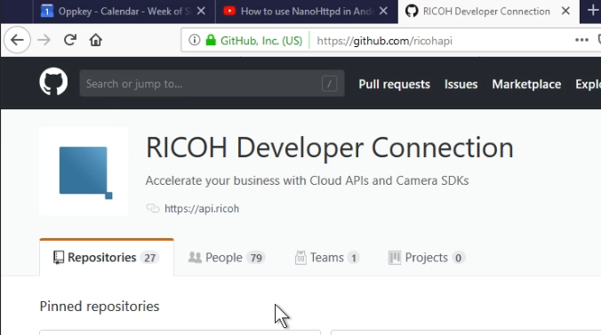
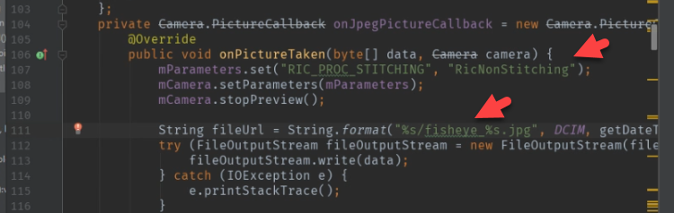
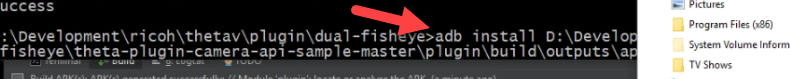
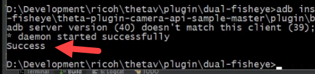
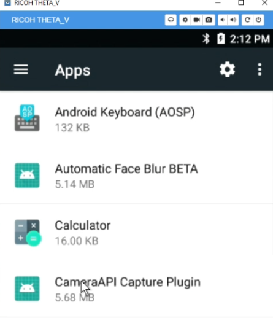
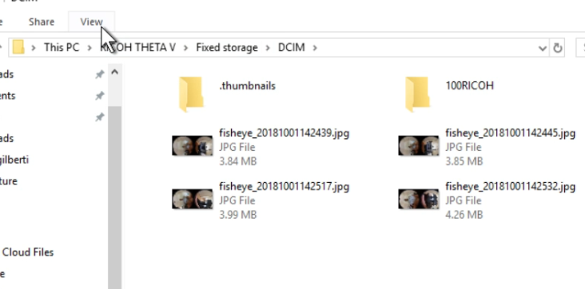
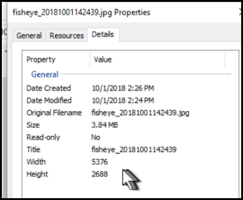
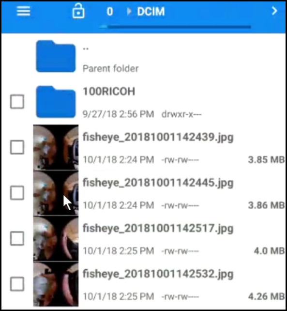

My First Plug-in¶

RICOH Developer Connection GitHub¶


Open CameraFragment¶


Change to RicNonStitching¶
Reference the RICOH official API documentation to find the values for stitching.
Use RicNonStitching.
Change filename¶
To help with testing, change the filename string from plugin to fisheye.
Change RIC_PROC_STITCHING in takePicture¶
In takePicture, look for RIC_PROC_STITCHING. Change the value
to RicNonStitching.
Save All and Build apk¶

Locate apk and install¶

Connect camera to your computer with a USB cable.
Use adb install plugin-debug.apk
You can add the path to file by dragging and dropping the file icon onto your command prompt.
Look for a Success after install.
Note: Your camera needs to be in Developer Mode. You need to join the partner program to enable Developer Mode. It’s free to join the partner program as of Oct 2018.

Go to Apps¶

Select CameraAPI Capture Plugin¶
Select Permissions¶


Take Picture¶
You can now use Vysor to start the plug-in with the camera still attached to USB.

If you want to use the camera untethered, you must use the RICOH Desktop app to set the default plug-in to launch. There is additional information on setting the default plug-in in the THETA V Plugin Development Community Guide.

View Images¶
Connect the THETA V to your computer with a USB cable. You can view the new images you just took with a new image viewer. The THETA acts like a normal camera or mobile phone.
The THETA is called, RICOH THETA V. The images are in Fixed storage > DCIM.
You can view the images by double-clicking on them. Here’s what a sample looks like in Photos.

You can also check the properties for image details.
You can view the images in Vysor using the file manager.
